开机动画、登录页、可拖拽窗口、能通关的扫雷——一个被做成完整操作系统的个人网站。
半透明玻璃窗框、居中带光晕的标题栏、圆形开始球、双栏开始菜单——桌面、任务栏、开始菜单和每一个窗口的控件，视觉效果全部手写 CSS 还原。
一段可以跳过的 XP 式开机动画，然后是一个只需要点一下用户名的登录页。
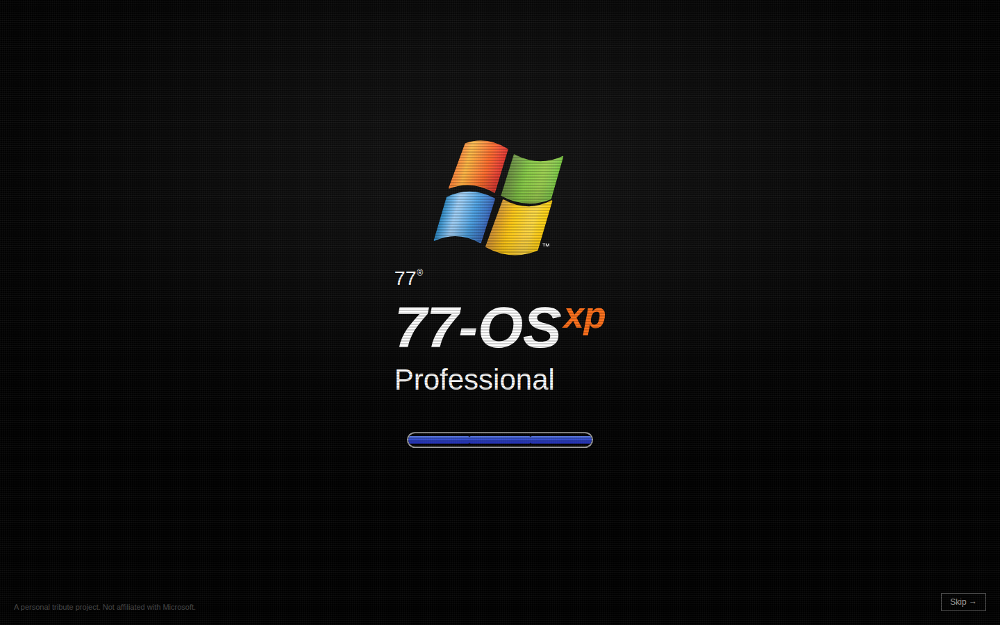
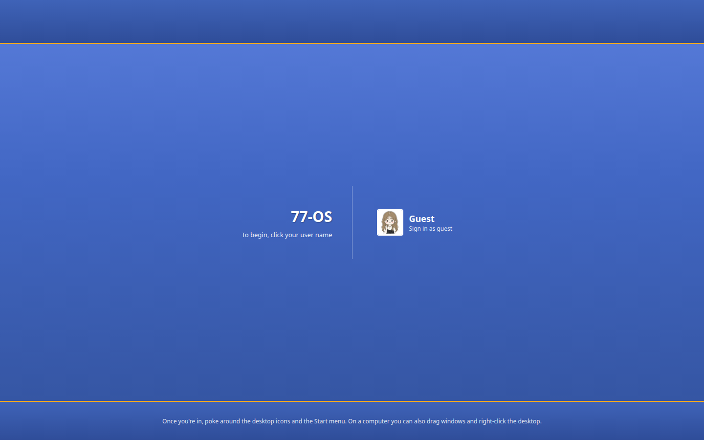
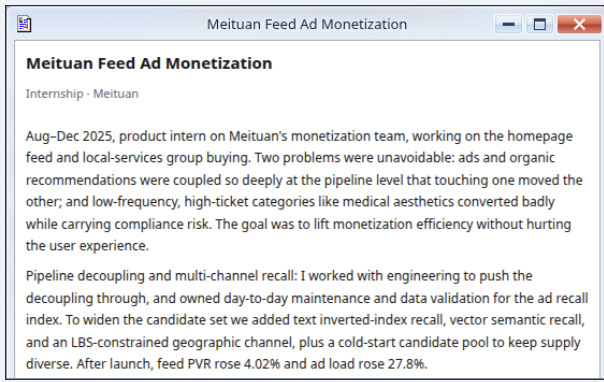
「我的文件」是真实经历——双击就能看到字节跳动豆包、ReelShort、蔚来三段实习，以及一段高校课题复盘。
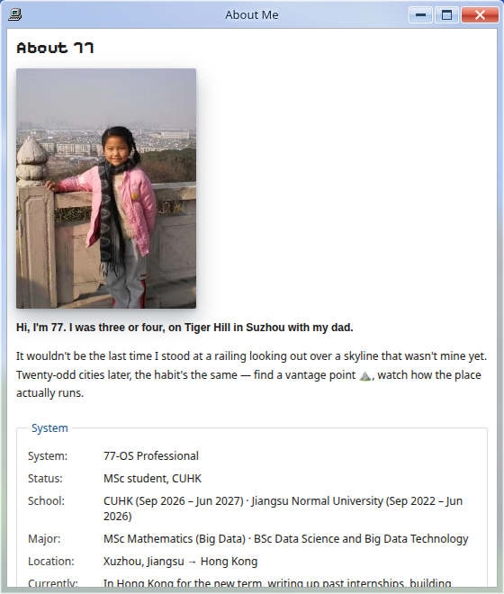
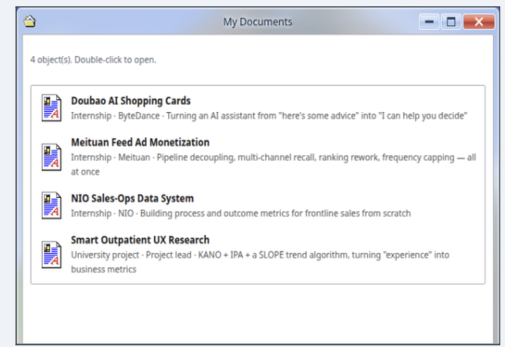
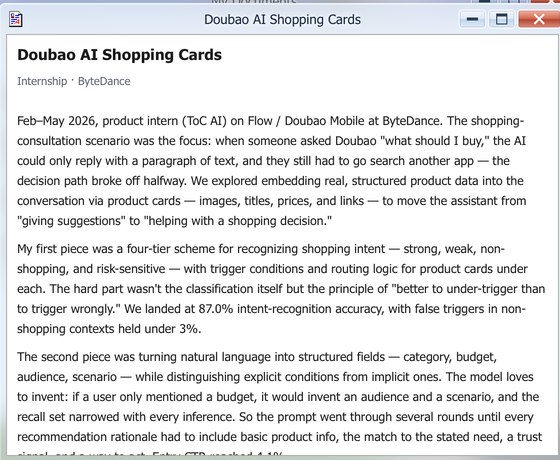
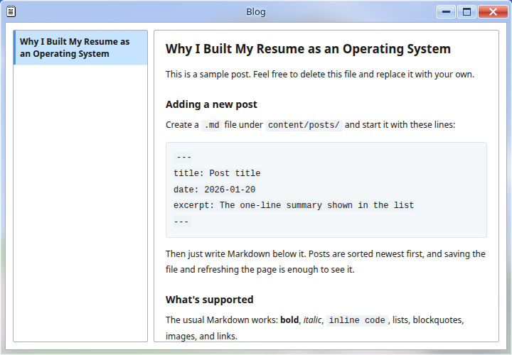
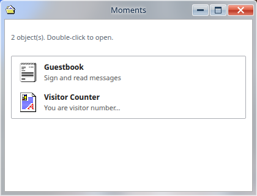
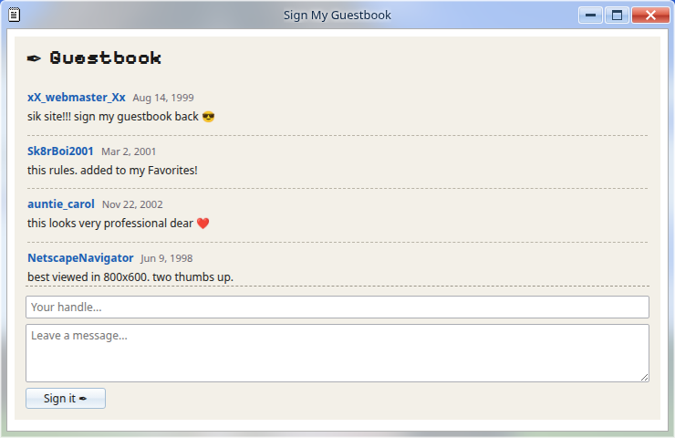
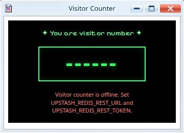
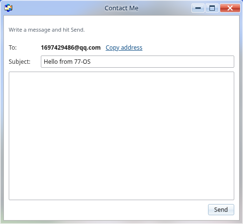
从一张复古播放列表，到一个真正能敲命令的终端——每一个都能玩、能用。
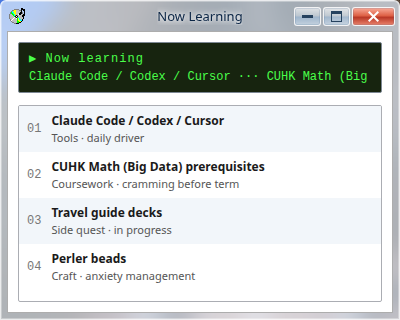
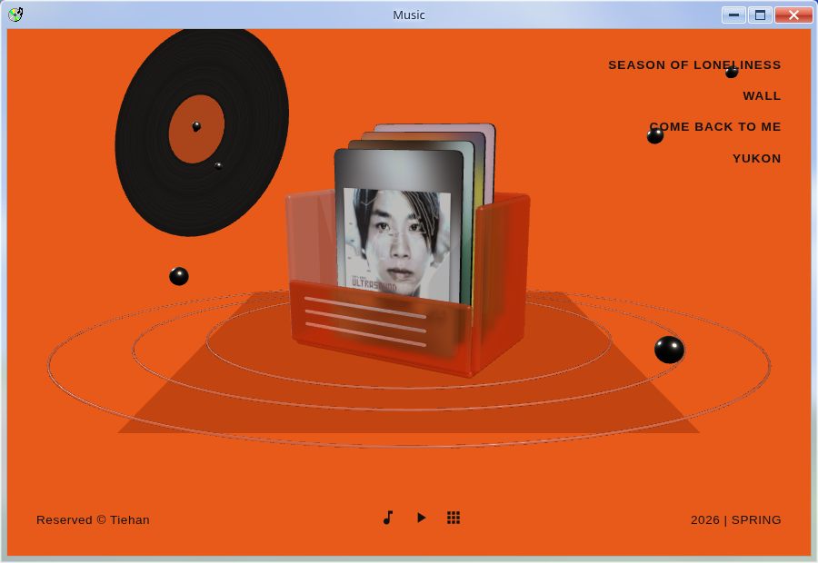
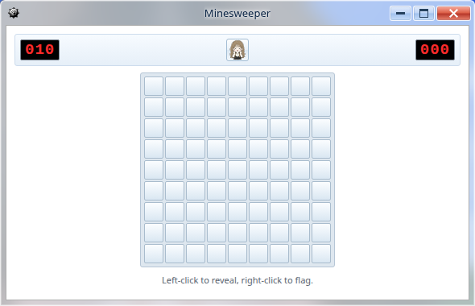
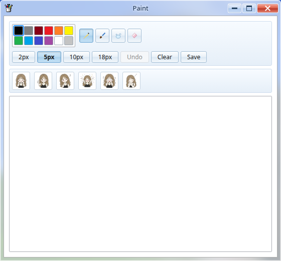
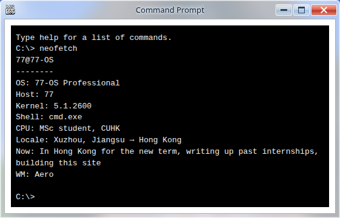
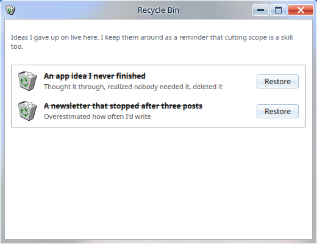
欢迎页式回归叙事：深色封面把「离开又回来」压成一眼可读的入口。
六章个人档案：从毕业、回家、求职到手帐与第一次，整条叙事线静态铺开。
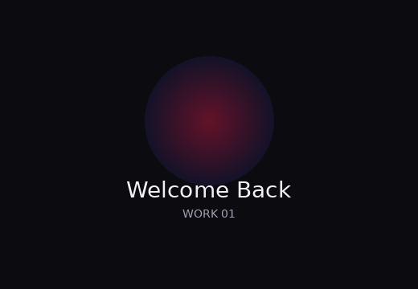
封面入口
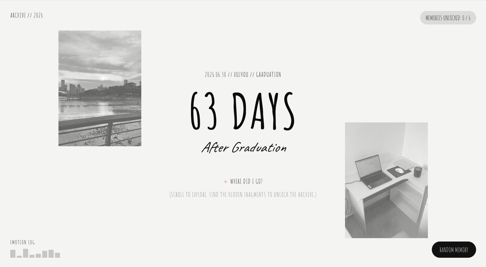
滚动探索，解锁夏天记忆
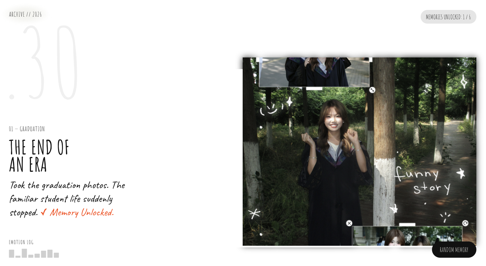
学生时代骤然停住
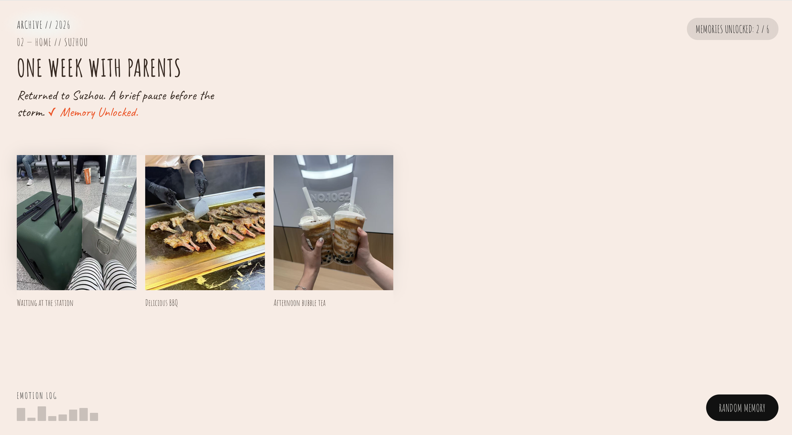
父母身边的一周喘息
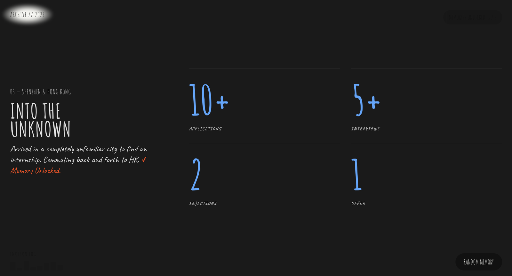
投递、面试与不确定
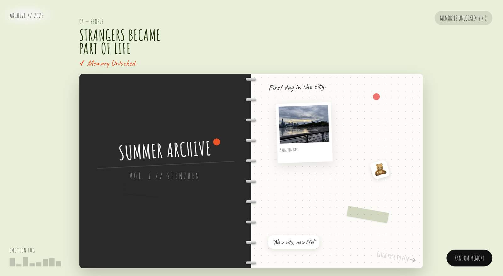
陌生人成为生活的一部分
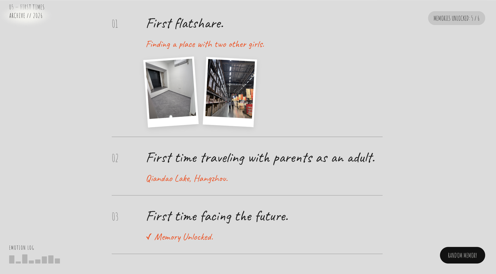
合租、旅行、面对未来
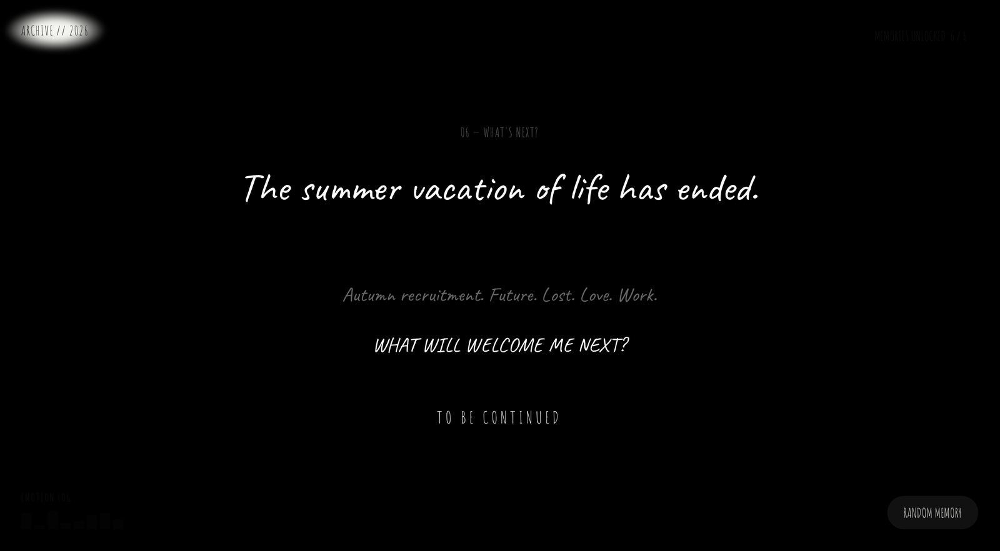
秋招与未完待续
图标和指针都是修复的历史位图，每一个指针热点都手动重新校准过，切换指针形状时视觉始终连续顺滑。
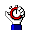
打开线上站点，自己点一遍开机、登录、拖窗口——比看截图更能判断产品完成度。